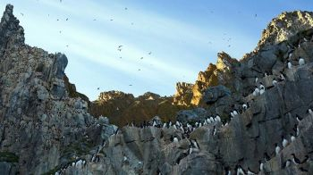

Quarta Prova
Indica quale tra queste catene montuose é la più lunga!
inserisci il nome nella casella sottostante
|
Cordigliera delle Ande |
Monti Urali |
|  | |
|
Cordigliera Artica |
Catena delle Apli |
"Presentazione della catena montuosa"
Barriera montuosa interposta per tutta la lunghezza del subcontinente sudamericano. Le Ande sono sempre state ostacolo all’insediamento. La presenza di altipiani a quote elevate con temperature mitigate ha tuttavia favorito lo sviluppo di centri urbani. All’arrivo dei conquistatori l’impero inca aveva riunificato gran parte del territorio dall’Ecuador al Cile ed era caratterizzato dall’accentramento statale. Gli spagnoli assoggettarono le popolazioni andine e lo sfruttamento delle comunità prese forma genocidiaria. L’indipendenza nel primo Ottocento non migliorò la vita degli indigeni.